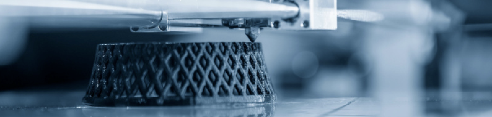
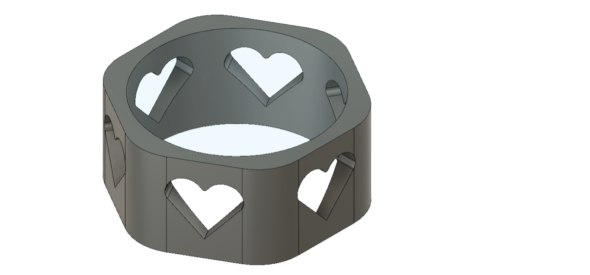
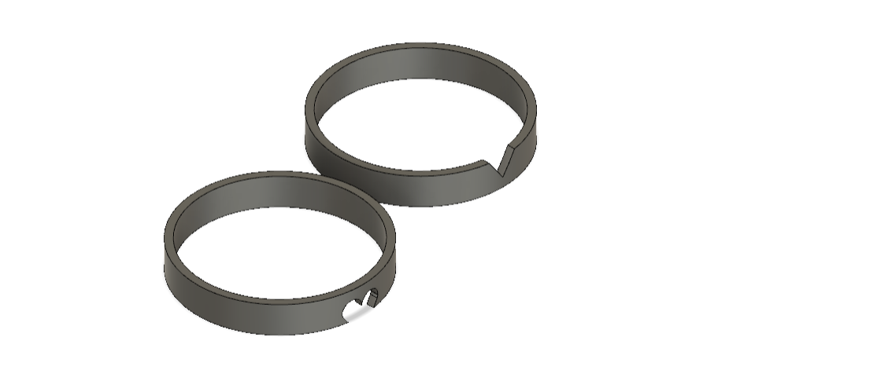
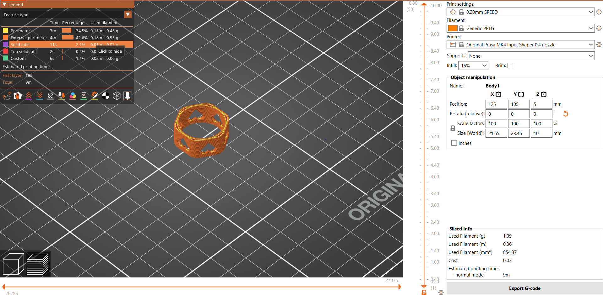
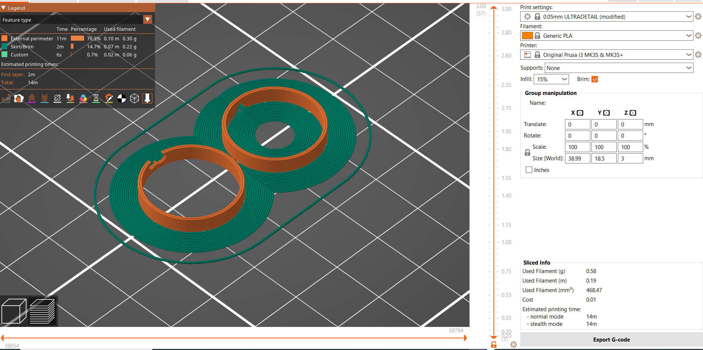
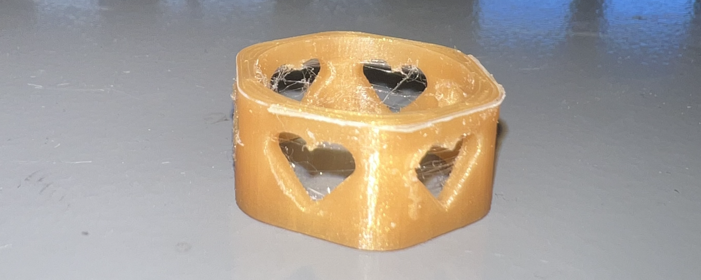
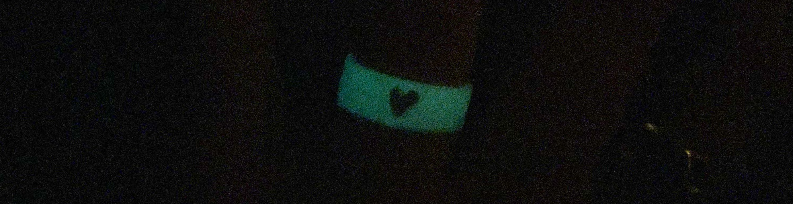
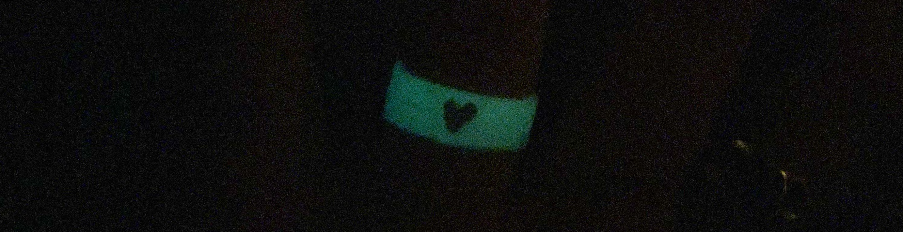

Verkefni 3
3D - Prentun
Fyrri hluti verkefnis 3 gengur út á að hanna 3D módel sem ekkert er hægt að framleiða með frádráttarframleiðslu, t.d. með geislaskera. Áður en hafist var við handa að hanna módel, var hópverkefnið. Ég og Margrét Maren völdum okkur 3D prentara og ræddum hönnunarreglurnar. Meðal þeirra var að mikilvægt er að passa að 3D prentarinn, getur ekki prentað neitt í lausu lofti, sem er mikilvægt að vita áður en hönnun hefst.
Hönnun
Næsta skref var að ákveða hvað ég ætlaði að hanna. Mig langaði að hanna eitthvað flott, eitthvað sem ég gæti notað. Ég ákvað að hanna hringi. Ég hannaði þrjá hringi í Fusion 360.
Fyrsti hringurinn sem ég ákvað að gera var 10 mm hár, og innra þvermálið var 19 mm, til þess að hann myndi passa á þumalinn minn. Ég ákvað að hafa þykktina mis þykka í gegnum hringinn, ásamt því að hafa nokkur göt sem voru hjartalaga á hringnum. Hugmyndin var að það væri erfitt að skera út hjörtu á hlut sem ekki er flatur og því væri auðveldara að 3D prenta hann.

Hinir hringarnir voru með aðeins minna þvermál, til þess að þeir gætu passað á baugfingur. Þeir passa saman, það er það er hálft hjarta sem er skorið út úr báðum hringum sem passa saman.

Prusa
Þá var komið að því að setja hringina inn í Prusa, til þess að ég gæti prentað þá út. Ég byrjaði á því að downloada Prusa . Þá var lítið mál að uploada Fusion 360 skjalinu inn í forritið og laga stillingar. Þar sem hringirnir voru aðeins 0.5 - 1 gramm, var mikilvægt að hafa stillingar stilltar þannig, að það verði tekið tillit til smáatriða og gæði yrðu sem best.
Ég passaði að hafa hringina þannig, að eftir hluti hjartanna væri á hvolfi, svo prentarinn þyrfti ekki að prenta í lausu loft. Svo hakaði ég við "brim" vegna þess að þykkt botns var ekki mjög mikil, og það er æskulegt að veita hlutnum auka stuðning.
Hér má sjá uppsetningar í Prusa, ásamt stillingum. Vert er þó að athuga að á fyrra myndina var ekki búið að hafa í "brim".
 
Val á efni
Áður en ég prentaði hringina, valdi ég efni. Ég ákvað að prenta stærri hringinn með gulllituðu plasti, og minni hringina með glow in the dark plasti.
Prentun
Prentunin gekk vel og hringirnir komu vel út. Þó var eitthvað um þráða í götum, sem ég fjarlægði með hníf. Það eru nokkrar ástæður fyrir því að þræðir myndist við 3D prentun. Ef hitastig prentarans er of hátt, getur plastið orðið of mjúkt og það flæðir á milli gata. Þræðir eru líklegri til að myndast í minni hlutum, þar sem plastið þarf að vera mjög heitt, til þess að passa upp á að smáatriði sjáist vel. Einnig gæti verið að prentarinn hafi verið á aðeins of miklum hraða, og náði þess vegna ekki að hætta alveg að prenta, á meðan hann fór milli gata.

Lokaútkoma
Hringirnir komu vel út. Ég skar af stuðninginn, og þræðina. Síðan pússaði ég hringina niður með naglaþjöl, og setti svo glært naglalakk yfir, til þess að fá smá glans. Hér er lokaútkoman:

 

3D skönnun
Annar hluti verkefnisins var að 3D skanna einhvern hlut. Ég byrjaði á því að downloada 3DF Zephyr . Næst horfði ég á eftirfarandi myndband og fylgdi því, til þess að skanna hlutinn inn.
Val á hlut
Áður en ég valdi mér hlut, las ég mér til um hvers konar hluti væri best að 3D skanna. Mikilvægt er að hluturinn hafi ekki of mikil smáatriði, þar sem hámarksfjöldi mynda í hugbúnaðinum er aðeins 50 myndir. Ég fann litla styttu heima hjá mér, og ákvað að skanna hana inn.

Fyrsta útkoma
Þegar ég setti inn 50 myndir voru aðeins undir 10 af þeim sem ég tók nothæfar og 3D skönnunin því mjög óskýr. Ég prófaði aftur, og fékk ávalt frekar lélegar útkomur. Ég prófaði aðra hluti líka, en lenti í því sama. Þá sótti ég forritið Qlone og það virkaði mun betur. Ég notaði þá útgáfu sem er frí, og setti mottu sem fylgir forritunu undir hlutinn. Næst tók eg myndir út mörgun sjónarhornum og fylgdi leiðbeiningum sem forritið gaf.
Útkoman 3D skönnunar
3D skönnunin kom ágætlega út. Hér er útkoman.